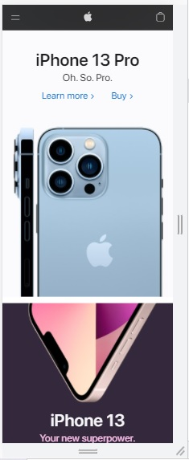
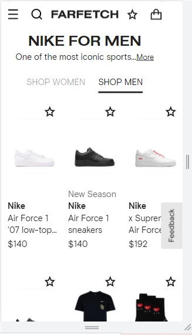

Visual Hierarchy
Apple Store
apple.com Apple uses the hierarchy to promote new models on its website, on the page we see that the new iPhone phone model stands out, which attracts attention at first glance. It is undoubtedly one of the best ways to promote your new model and your unique camera, above the image you can see the name of the model with the phrase Oh. So. Pro draws even more attention and two links, one to obtain more information and another to buy the product.
Hick’s Law
Farfetch-Nike
Nike Store
Nike uses Hick's law, as each option presented on the page increases the time it takes for a customer to make a decision. The multiple options that Nike shows the user makes the user spend more time on the page looking at the different models. These models are presented with a white background to have a better visualization of the product, showing only the information required for each product.
Law of Similarity
Atlantida Bank
Atlantida Bank
Banco Atlántida uses the law of similarity on its page by applying the same color tones, rectangular shapes, and designs for different links, making several of them look similar. In the different options, it can be seen that the red color and the letters white. On the gray shapes, we can see that they are very similar and it also highlights the white text